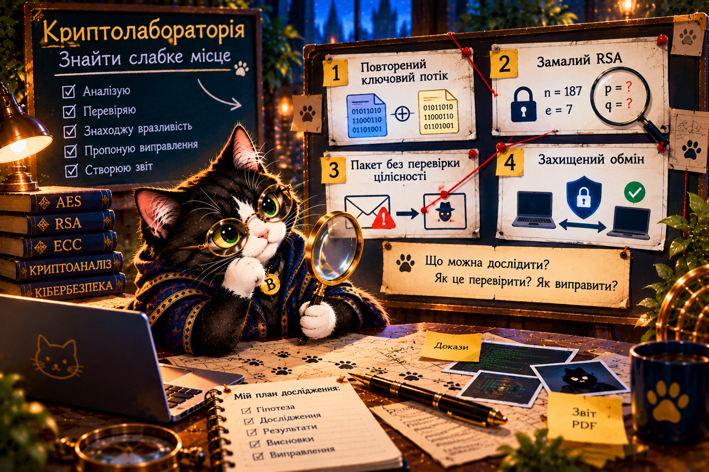

Фінальний веббот · 9 етапів
🏆 Експертний висновок Буча
Доведіть, що Ви мислите як криптодослідник.

🎉 ✨ 🐾 ✨ 🎉
Вітаємо! Ви завершили криптографічну подорож!
Буч пишається Вашим дослідницьким мисленням. Ви навчилися не просто шифрувати, а перевіряти гіпотези, знаходити докази та пропонувати захист.
Попереду — нові професійні дороги: криптоаналіз, кібербезпека, захист застосунків, інженерія протоколів, цифрова криміналістика. Будьте допитливими, перевіряйте твердження, поважайте приватність і використовуйте знання відповідально.
Ваш наступний крок: створіть власний маленький дослідницький проєкт або продовжуйте навчання з криптографії та Python.
Мій дослідницький PDF-звіт Повернутися до місії
Паспорт — навчальна імітація цифрового підпису, не справжній електронний підпис і не документ про кваліфікацію.